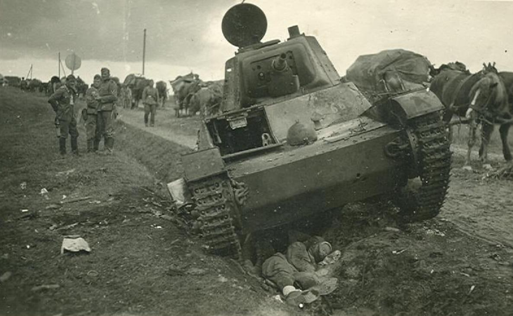
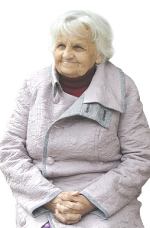
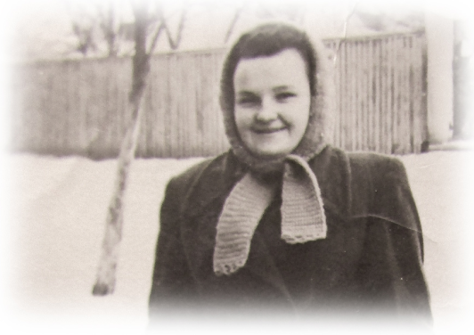
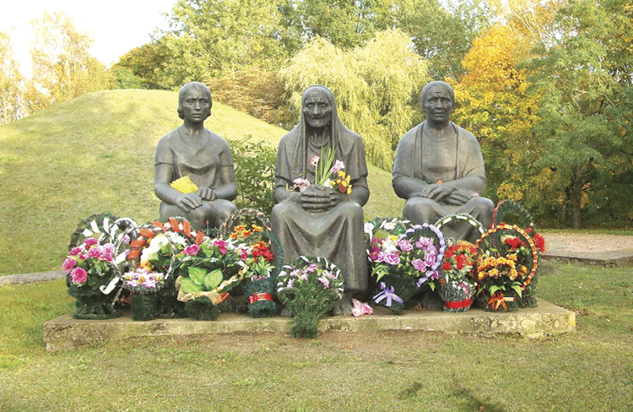

Дети на войне
До сих пор слышу крики из горящего сарая

Больше 70 лет брестчанка «слышит» крики горящих в соседней деревне людей
В марте Зоя Артюх из Бреста отпраздновала 86-летие. Хотя постойте. Бабушка загибает пальцы на руке: в действительности ей уже за 90. Еще в начале войны мама намеренно уменьшила возраст старшей дочери. Чтобы не забрали работать в Германию. Сейчас точную дату рождения уроженки деревни Хмелево Жабинковского района, увы, не восстановишь. Зато продолжение других воспоминаний той кровавой поры находим даже в историко-документальной литературе. Слово Зое Денисовне.
– Прошло столько лет, а я отчетливо помню то июньское утро. Услышав незнакомый гул, мы с сестрой Ирой и братьями Гришей и Степой выбежали из дома. «Ганна, то багі прыйшлі», – объяснила соседка происходящее нашей маме. Но скоро кружившие над деревней самолеты «рассказали» сами, какому богу служат.
Нам повезло: родители всю войну были рядом. Папу не мобилизовали, потому что болел плевритом. Но умереть ему было суждено все-таки от пули: через год после войны его, сторожа магазина, на ночном дежурстве застрелил грабитель.
Скоро после начала Великой Отечественной мы покинули деревню. Многие соседи делали то же самое. Прятались от фашистов в лесах. Каждый брал из дома что мог. Даже коров и лошадей уводили. В селе оставались старики. Например, мои бабушка Прасковья и дед Кузьма. Они стерегли хаты. Гитлеровцы их не трогали. Украдкой мы пробирались в деревню за едой и вещами. Нацистов в деревне было не много.
Нацистов в деревне было не много. Жили в пяти домах от нашего. Их «работой» было истязать местных, которых обличили в помощи солдатам или партизанам. Во время войны я узнала, насколько жестоким может быть человек.
Фашисты безжалостно уничтожили соседнюю деревушку Дремлево. Прослышали, что кто-то из местных поддерживает партизан, что они приходят ночью поесть, а наутро прячутся в лесу. Оккупанты не стали разбираться, правда ли это. Устроили показательную расправу.
Согнали жителей в сараи. Всех. И детей. И женщин. И стариков. Постреляли их. Умерли, конечно, не все. Потом нелюди облили сараи бензином и подожгли. Все кричали. Вы только представьте: закрытые снаружи, они горели живыми. Их стоны разносились в утренней тишине за несколько километров. Сама слышала. До сих пор слышу…
Мы в то время ютились в соседней деревне у родной сестры мамы Нади. Моя младшая сестренка уловила обрывки разговора взрослых, схватила домашнего кота и бросила в печку. Животное горело, а она скорбно плакала. Спустя годы спросила, помнит ли она этот случай. Забыла. И слава богу. */

Когда с родителями уходили в лес, жили и по оврагам, и на земле. Есть было нечего. Варили затирку. Большим «праздником» был суп с вороной.
Детство в мои годы было скромным по теперешним меркам. Белая булка с изюмом в нашем доме на столе «гостила» разве что на Пасху. Сладкого вообще в рот не брали. Любимым лакомством была груша. Игрушек тоже раз два и обчелся. Куклы – из тряпок, самодельные. Из игр помню прятки и догонялки. Любимое развлечение – бегать по весне вокруг ямы, откуда выкопали картошку.
После войны снова пошла в первый класс. За столько лет знания нужно было восстановить! В сборном классе сидели ученики разных возрастов, я одна из самых старших. Младший брат после окончания начальной школы поехал учиться в Пелище, в 17 километрах от Хмелево. Бывало, вернется на выходные и плачется маме, что рукава у пиджака короткие, стыдно. А мама тихо в ответ: «Учись, сынок, уважаемым человеком станешь». Так оно и вышло: много лет наш Степа был директором сельской школы в Каменецком районе.
А меня тянуло в Брест. Окончила курсы продавца. Какое-то время торговала свежей выпечкой. Потом перешла работать официанткой в ресторан «Москва». Сейчас на этом месте магазин бытовой техники.
Кто бы мог подумать, что молодой человек, которому помогла подняться после падения с велосипеда, станет моим супругом. Замуж вышла относительно поздно – в 27 лет. Через пару лет с разницей в четыре года родились дочь и сын. Они подарили мне двух внуков. Внуки – двух правнуков.

Мемориал на месте сожженной деревни Дремлево
Из книги «Памяць. Жабінкоўскі раён»
«11 верасня 1942 года на праваслаўнае свята Галавасек назаўсёды спынілася жыццё ў вёсцы Драмлёва. Ранкам, у час карнай аперацыі «Трохвугольнік», фашысты ўварваліся ў вёску. Сагнаўшы жыхароў у чатыры хлявы, яны пачалі рабаваць вёску, затым, расстраляўшы насельніцтва, падпалілі яе. У той жудасны дзень акупанты забілі і спалілі 190 чалавек, знішчылі 43 двары. Пасля Вялікай Айчыннай вайны Драмлёва не аднавілася. У 1967 годдзе на месцы спаленай вёскі насыпалі Курган Памяці, а ў 1982 годдзе пабудавалі мемарыяльны комплекс. На фоне Кургана, ля яго падножжа, на камянях-валунах у журботным маўчанні застылі, адлітыя з бронзы, тры жанчыны – маці, дачка і ўнучка, якія сімвалізуюць вечнае жыццё. Вёска ўвекавечана ў мемарыяльным комплексе «Хатынь».